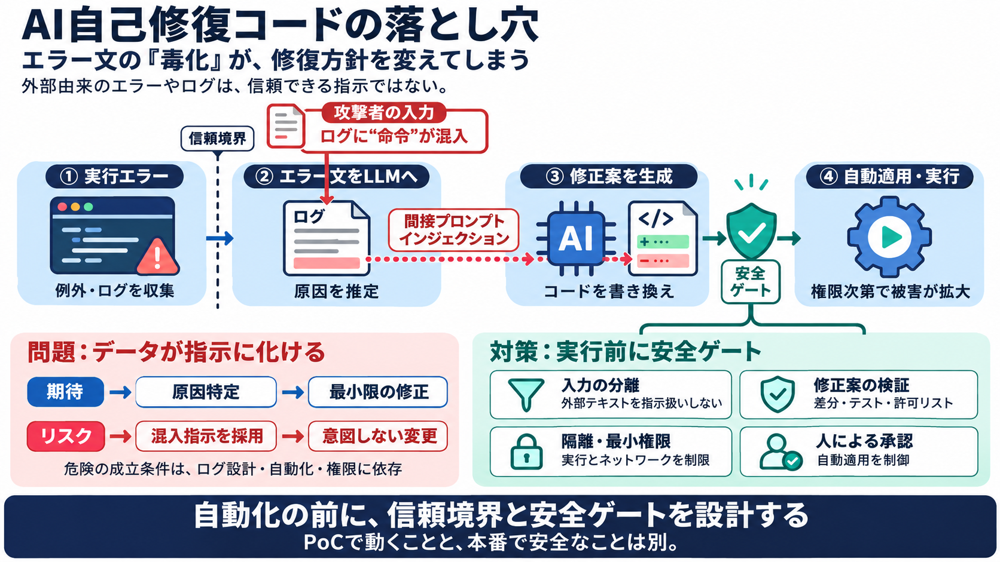

AIエージェントのセキュリティ対策｜プロンプトインジェクションと権限設計 | AI活用マーケティング総合研究所
1. AIエージェントのセキュリティ対策とは 1. この記事の対象読者 2. AIエージェントの機能とセキュリティリスクが増える理由 1. リスクは「自律性×権限×データ感度×不可逆性」で判断する 3. プロンプトインジェクショ…

LLMに「エラー文」を渡す自己修復は便利ですが、攻撃者が細工したテキストが“修復方針”に影響するリスクがあります。
自己修復（self-healing）/ エラー文の毒化（Error-message poisoning）という視点で論点を整理します。
実行中のエラー内容（例外メッセージ、スタックトレース、ログ）をLLMに渡して、原因推定とコード修正案を生成します。
その「渡されるテキスト」に外部入力が混ざると、攻撃面になり得ます（日本語：攻撃面＝attack surface）。
実行エラー → エラー文をLLMへ → 修正案生成 →（場合により）自動適用
LLMは“正しい原因特定”だけでなく“指示としての解釈”にも引っ張られる
エラー文が攻撃者の文章を運ぶと、LLMは修復の根拠としてそれを強く採用し、結果として意図しないコード変更へ向かうことがあります。
本来：例外の事実・文脈（原因推定）
攻撃者：例外/ログに“命令”を埋め込み
修正：攻撃者の方向に“最適化”され得る
攻撃者入力が例外メッセージやログに入り込み、LLMがそれを解釈して修正案を作ると、間接プロンプトインジェクション（Indirect prompt injection）的な危険が生じます。
攻撃者入力がエラー/ログに反映される設計
LLMが“エラー文中の指示”を根拠として強く扱う
修正案が自動適用・自動実行される（権限やゲート次第）
安全ゲート（許可リスト/検証/隔離）が弱いほど被害が連鎖
危険は複数段で起き得ます。素材が示す典型は「修正案生成→自動反映→実行」のどこかです。
LLMが“混入した文章”を指示として取り込む
検証なしでコード変更が反映される
危険操作が許可され、予期せぬ挙動が走る
素材は、攻撃者が不正入力とともに「危険な動作（例：wgetでダウンロードし、bashで実行）」をエラー文の一部として混ぜるケースを示唆しています。
※実際の成立条件（どのログにどう出るか等）は実装依存で、素材だけでは確定できません。
自己修復は「エラーを理解して直す」ことを目的にしますが、LLMはテキストとしての指示の“強さ”に引っ張られます。
つまり攻撃者の文章が混ざると、修復の方向が変わり得ます。
原因特定 → 最小限の修正
テキスト解釈 → 混入指示の採用リスク
素材は、ブラウザのヒューリスティックなXSSフィルタが誤動作で脆弱性を誘発し、最終的に削除された歴史を引き合いに出します。
自動で“直す”発想は、境界条件で逆効果になりやすいという類推です。
フィルタで危険を未然に排除
安全に見えるコードが脆弱になり得た
素材は「単純なPoC以上は危険になり得る」といったトーンです。
裏返しとして、本番では“無制限の自動修正”を避け、制御と検証を要する含意があります。
影響範囲が限定されやすい
被害が連鎖し得る（自動適用/実行が鍵）
運用を検討するなら「自己修復をどこまで自動化するか」より先に、LLMに渡す入力の信頼境界と、安全ゲートを設計・検証する必要があります。
エラー/ログに外部由来が混ざるか
修正案を“実行前に”検証するか
実行環境の隔離・最小権限を強制するか
AI自己修復は「便利」ですが、エラー文が攻撃者の入力を運び得るなら、LLMが攻撃側に引きずられて意図しない修正につながり得ます。
素材は、本番導入を急がず危険化条件を見極めよ、と警告しています。
“エラーをLLMへ”が間接プロンプト注入の入口になり得る
権限制御・検証・隔離・承認（Human-in-the-loop）を組み合わせる
1. AIエージェントのセキュリティ対策とは 1. この記事の対象読者 2. AIエージェントの機能とセキュリティリスクが増える理由 1. リスクは「自律性×権限×データ感度×不可逆性」で判断する 3. プロンプトインジェクショ…
まず「どこからデータが入り、どこへ出ていくか」を図にする。LLMへの入力経路（ユーザー入力・RAG参照文書・Webフェッチ・アップロードファイル）、エージェントが触れるツールと権限、出力の流し先（画面・シェル・DB・外部API）をすべて書き…
homula's Insight UK National Cyber Security Centreは「LLMは命令とデータを根本的に区別しない」と述べています。 プロンプトインジェクション対策の本質は「完全防御」ではなく、「攻撃が成功し…
| LLM関連主要攻撃ベクトル | 攻撃タイプ | 潜在的影響度 | OWASP LLM Top 10 (2023) 順位 | ------| | Prompt Injection | モデル操作、情報漏洩 | 非常に高い | #1 | |…
`.env` ### ② サンドボックスとネットワーク隔離 (Network Egress Filtering) Code Interpreterが実行される環境は徹底的に隔離する必要があります。 `requests.get()` `…